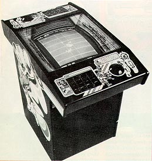

1977
Atari
Destroyer was a unique 1 player experience. With a combination
of realistic controls, sound effects and the use of 3D cardboard graphics
overlaying the monitor the game gave the player a feel of playing a realistic
sea battle game. With sonar and explosion sounds from
the left and right speakers the game had a fully immersed experience....
for 1977. The unit could have variable
time settings or set on demonstration mode. It also offered
"Durastress" reliability and "Instapart" 24-hour parts turnaround to keep
the unit up and running.
Nov. 1977
Howie Delman's second Atari
project (Super Bug was his first), Canyon Bomber was quickly
converted for the VCS. He describes it as "upside-down Breakout"
and says it was a far superior two-player competitive game than when played
one person versus the computer. He modified the Sprint 2's circuitry,
then programmed it.
 Another
Dennis Koble effort, Avalanche is a great example of a game that everybody
has played but probably doesn't know. There's no question that Activision's
Kaboom (by Larry Kaplan, another Atari alumnis) was a rendition of Avalanche.
And while we're on the subject, Drag Race, which came out 10 months earlier,
has since become Dragster, another Activision Title.
Another
Dennis Koble effort, Avalanche is a great example of a game that everybody
has played but probably doesn't know. There's no question that Activision's
Kaboom (by Larry Kaplan, another Atari alumnis) was a rendition of Avalanche.
And while we're on the subject, Drag Race, which came out 10 months earlier,
has since become Dragster, another Activision Title.
October, 1978
The
first of a slew of Atari sports games (introducing Le Trak Ball), Football
was without a doubt the best of the bunch. You had sweeps and keepers
and down-and-outs and a video gridiron that seemed like it could go on
forever. For a quarter you got a minute-and-a-half, but fanatics
were known to pop in 10 bucks worth and go the full hour. The
best Atari game since Super Breakout, which came out the month before.
Lunar
Lander is an interesting story for a lot of reasons. It was game
that had been around forever on PDP and IBM computers (only in text).
It was Atari's first game that utilized an XY hardware system (vector graphics).
It had already sold 5,000 units when Atari killed it to make room for Asteroids
on the assembly line. Collectors, take note: Delman says
that there are 200 Asteroids that went out in Lunar Lander cabinets, same
art and all.
Atari
SUBS was the first two-monitor video game from Atari. The intriguing
submarine battle puts each player in control of a search and destroy mission.
Using a realistic sonar locating image, accurate steering and firing controls,
the players must act quickly to score hits. The unique cabinet
design allows each of the two players to use their own TV monitor.
In addition to the dual monitor, this was the first game with an operator
optional add-a-coin or regular credit coinage mode. In add-a-coin
mode, the game can be set on eight different times per coin.
{kind=link}
{kind=link}
{kind=link}
{kind=link}
{kind=link}
{kind=link}